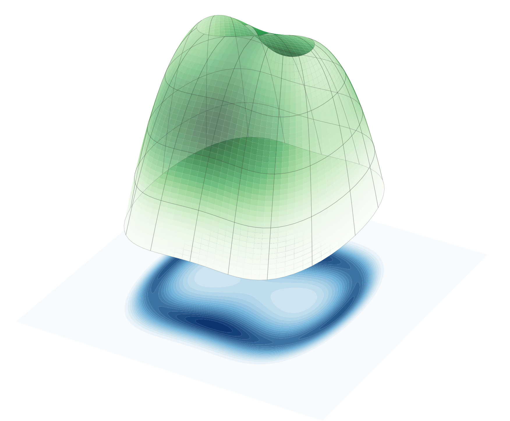
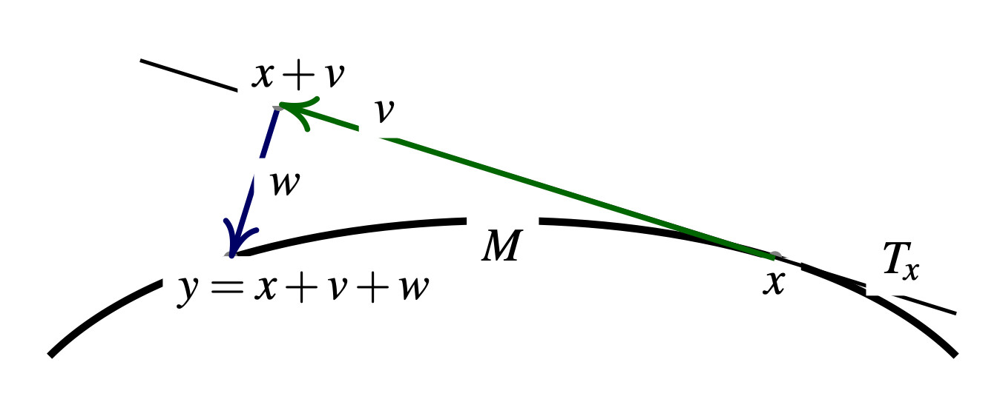
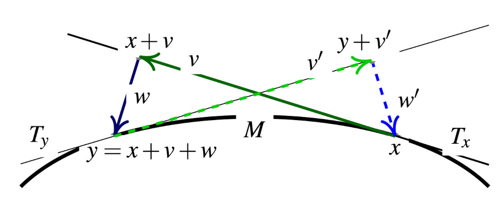
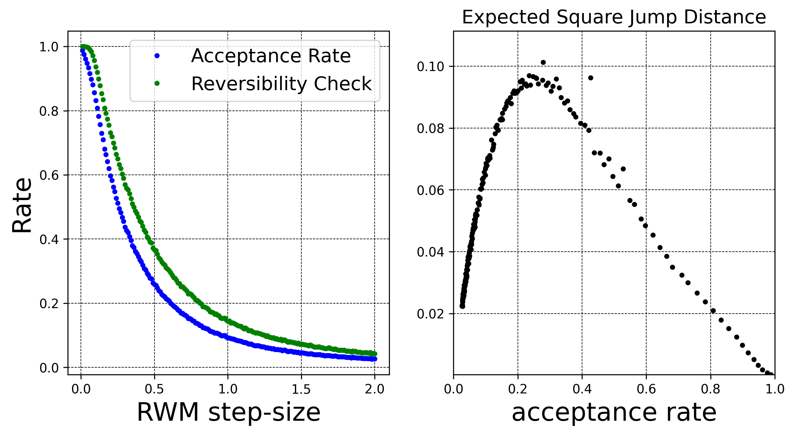
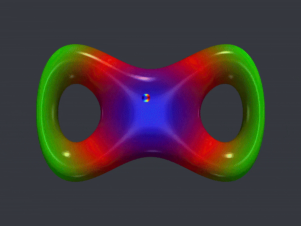

Consider a smooth manifold \(\mathcal{M}\subset \mathbb{R}^n\) of dimension \(d_{\mathcal{M}} = (n-d)\) defined as the zero set of a well-behaved “constraint” function \(C: \mathbb{R}^n \to \mathbb{R}^d\),
\[ \mathcal{M}= \{ x \in \mathbb{R}^n \; \text{such that} \; C(x) = 0 \}. \]
We would like to use MCMC to sample from a probability distribution supported on \(\mathcal{M}\) with density \(\pi(x)\) with respect to the uniform Hausdorff measure on \(\mathcal{M}\). It is relatively straightforward to adapt standard MCMC methods when dealing with simple manifolds such as a sphere or a torus since their geodesics and several other geometric quantities are analytically tractable. Maybe surprisingly, it is in fact relatively straightforward to design MCMC samplers on general implicitly defined manifold such as \(\mathcal{M}\). The article (Zappa, Holmes-Cerfon, and Goodman 2018) explains these ideas beautifully.
Manifold Random Walk Metropolis-Hastings
Assume that \(x_n \in \mathcal{M}\) is the current position of the MCMC chain. To generate a proposal \(y_n \in \mathcal{M}\) that will eventually be accepted or rejected, one can proceed very similarly to the standard RWM algorithm with Gaussian perturbations with variance \(\sigma^2\). First, generate a vector \(v \in T_{x_n}\) from a centred Gaussian distribution with covariance \(\sigma^2 \, I\) on the tangent space \(T_{x_n}\) to \(\mathcal{M}\) at \(x_n\). To do so, it suffices for example to generate a standard Gaussian vector \(z \sim \mathcal{N}(0, \sigma^2 I_n)\) in \(\mathbb{R}^n\) and orthogonal-project it onto \(T_{x_n}\). Indeed, one cannot simply define the proposal as \(x_n + v\) since it would not necessarily lie on \(\mathcal{M}\). Instead, one projects \(x_n + v\) back to \(\mathcal{M}\). To do so, one needs to define the direction used for the projection and the manifold RWM algorithm uses \(T_{x_n}^\perp\), for reasons that will become clear later. In other words, the proposal \(y_n\) is obtained by seeking a vector \(w \in T_{x_n}^{\perp}\) such that \(x_n + v + w \in \mathcal{M}\).

If one calls \(J_{x_n}\) the Jacobian matrix of \(C\) at \(x_n\), i.e. the matrix whose rows are the gradients of the components of \(C\), this projection operation boils down to finding a vector \(\lambda \in \mathbb{R}^d\) such that
\[ C( \, x_n + v + J_{x_n}^\top \lambda) = 0 \in \mathbb{R}^d. \tag{1}\]
Note that Equation 1 is a non-linear equation in \(\lambda\) that can have no solution, one solution or many solutions – this can seem like a fundamental roadblock to the design of a valid MCMC algorithm, but we will see that it is not! Before discussing in slightly more details the resolution of Equation 1, assume that a standard root-finding algorithm takes the pair \((x_n+v, J_{x_n})\) as input and attempts to produces the projection \(y_n\),
\[ \text{Proj}: \quad (x_n+v, J_{x_n}) \; \underbrace{\mapsto}_{\text{root-finding}} \; y_n \in \mathcal{M}. \]
The algorithm will either converge to one of the possible solutions or fail. If the algorithm fails to converge, one can simply reject the proposal \(y_n\) and set \(y_n = \text{(Failed)}\) and set \(x_{n+1} = x_n\). If the algorithm converges, this defines a valid proposal \(y_n \in \mathcal{M}\). To ensure reversibility, and it is one of the main novelty of the article (Zappa, Holmes-Cerfon, and Goodman 2018), one needs to verify that the reverse proposal \(y_n \mapsto x_n\) is possible.

To do so, note that the only possibility for the reverse move \(y_n \to x_n\) to happen is if \(x_n = \text{Proj}(y_n + v', J_{y_n})\) where
\[ x_n-y_n \;=\; \underbrace{v'}_{\in T_{y_n}} \, + \, \underbrace{w'}_{\in T_{y_n}^{\perp}}. \]
The uniqueness follows from the decomposition \(\mathbb{R}^n \equiv T_{y_n} \otimes T_{y_n}^{\perp}\). The reverse move is consequently possible if and only if the following reversibility check condition is satisfied,
\[ x_n = \text{Proj}(y_n + v', J_{y_n}). \tag{2}\]
This reversibility check is necessary as it is not guaranteed that the root-finding algorithm started from \(y_n + v'\) converges at all, or converges to \(x_n\) in the case when there are several solutions. If Equation 2 is not satisfied, the proposal \(y_n\) is rejected and one sets \(x_{n+1} = x_n\). On the other hand, if Equation 2 is satisfied, the proposal \(y_n\) is accepted with the usual Metropolis-Hastings probability
\[ \min \left\{1, \frac{\pi(y_n) \, p(v'|x_n)}{\pi(x_n) \, p(v|x_n)} \right\} \]
where \(p(v|x) = Z^{-1} \, \exp(-\|v\|^2 / 2 \sigma^2)\) denotes the Gaussian density on the tangent space \(T_{x_n}\) The above description defines a valid MCMC algorithm on \(\mathcal{M}\) that is reversible with respect to the target distribution \(\pi(x)\).
Projection onto the manifold
As described above, the main difficulty is to solve the non-linear equation Equation 1 describing the projection of the proposal \((x_n + v)\) back to the manifold \(\mathcal{M}\). The projection is along the space spanned by the columns of \(J_{x_n}^\top \in \mathbb{R}^{n,d}\), i.e. find a vector \(\lambda \in \mathbb{R}^d\) such that
\[ \Phi(\lambda) = C( \, x_n + v + J_{x_n}^\top \lambda) = 0 \in \mathbb{R}^d. \]
One can use a standard Newton’s method to solve this equation started from \(\lambda_0=0\). Setting for notational convenience \(q(\lambda) = x_n + v + J_{x_n}^T \, \lambda\), this boils down to iterating
\[ \lambda_{k+1} - \lambda_{k} = - \left( J_{q(\lambda_k)} \, J_{x_n}^\top \right)^{-1} \, \Phi(\lambda_k). \]
As described in (Barth et al. 1995), it can sometimes be computationally advantageous to use a quasi-Newton method and use instead
\[ \lambda_{k+1} - \lambda_{k} = - G^{-1} \, \Phi(\lambda_k) \]
with fixed positive definite matrix \(G = J_{x_n} \, J_{x_n}^\top\) since one can then pre-compute a decomposition of \(G\) and use it to solve the linear systems at each iterations. In some recent and related work (Au, Graham, and Thiery 2022), we observed that the standard Newton method performed well in the settings we considered and there was most of the time no computational advantage to using a quasi-Newton method. In practice, the main computational bottleneck is to compute the Jacobian matrix \(J_{x_n}\), although it is problem-dependent and some structure can typically be exploited. In practice, only a relatively small number of iterations are performed and the root-finding algorithm is stopped as soon as \(\|\Phi(\lambda_k)\|\) is below a certain threshold. If the stepsize is small, i.e. \(\|v\| \ll 1\), it is typically the case that the Newton’s method will converge to a solution in only a very small number of iterations – indeed, Newton’s method is quadratically convergent when close to a solution.

In the figure above, I have implemented the RWM algorithm above described to sample from the uniform distribution supported on a double torus described by the constraint function \(C: \mathbb{R}^3 \to \mathbb{R}\) given as
\[ C(x,y,z) = (x^2 \, (x^2 - 1) + y^2)^2+z^2-0.03. \]
The figure shows \(30,000\) chains ran in parallel, which is straightforward to implement in practice with JAX (Bradbury et al. 2018). All the chains are initialized from the same position so that one can visualize the evolution of the density of particles.

One can for example monitor the usual expected squared jump distance
\[ \textrm{(ESJD)} \equiv \mathbb{E}[\|X_{n+1} - X_n\|^2] \]
and maximize it to tune the RWM step-size; it would probably make slightly more sense to monitor the squared geodesic distances instead the naive squared norm \(\|X_{n+1} - X_n\|^2\), but that’s way to much hassle and would probably make only a negligible difference. In the figure above, I have plotted the expected squared jump distance as a function of the acceptance rate for different step-sizes. It is interesting to see a pattern extremely similar to the one observed in the standard RWM algorithm (Roberts and Rosenthal 2001): in this double torus example, the optimal acceptance rate is around \(25\%\). Note that since the target distribution is uniform, the rate of acceptance is only very slightly lower than the proportion of successful reversibility checks.
Hamiltonian Monte Carlo (HMC) on manifolds
While the Random Walk Metropolis-Hastings algorithm is interesting, exploiting gradient information is often necessary to design efficient MCMC samplers. Consider a single iteration of a standard Hamiltonian Monte Carlo (HMC) sampler targeting a density \(\pi(q)\) on \(q \in \mathbb{R}^n\). The method proceeds by simulating from a dynamics that is reversible with respect to an extended target density \(\bar{\pi}(q,p)\) on \(\mathbb{R}^n \otimes \mathbb{R}^n\) defined as
\[ \begin{aligned} \bar{\pi}(q,p) &\propto \pi(q) \, \exp \left\{ -\frac{1}{2m} \|p\|^2 \right\}\\ &= \exp\left\{ \log \pi(q) - K(p) \right\} \end{aligned} \]
for a user-defined mass parameter \(m > 0\). In general, the mass parameter is a positive definite matrix but generalizing this to manifolds is slightly less useful in practice. For a time-discretization step \(\varepsilon> 0\) and a current position \((q_n,p_n)\), the method proceeds by generating a proposal \((q_{*},p_{*})\) defined as
\[ \left\{ \begin{aligned} p_{n+1/2} &= p_n + \frac{\varepsilon}{2} \nabla \log \pi(q_n)\\ q_{*} &= q_n + \varepsilon\, m^{-1} \, p_{n+1/2}\\ p_{*} &= p_{n+1/2} + \frac{\varepsilon}{2} \nabla \log \pi(q_{*}). \end{aligned} \right. \]
This proposal is accepted with probability \(\min\left( 1, \bar{\pi}(q_*, p_*)/\bar{\pi}(q_n, p_n) \right)\). Indeed, in standard implementation, several leapfrog steps are performed instead of a single one. One can also choose to perform a single leapfrog step as above and only do a partial refreshment of the momentum after each leapfrog step – this may be more efficient or easier to implement when running a large number of HMC chains in parallel on a GPU for example. To adapt the HMC algorithm to sample from a density \(\pi(q)\) supported on a manifold \(\mathcal{M}\), one can proceed similarly to the RWM algorithm by interleaving additional projection steps. These projections are needed to ensure that the momentum vectors \(p_n\) remain in the right tangent spaces and the position vectors \(q_n\) remain on the manifold \(\mathcal{M}\),
\[ (q_n, p_n) \; \in \; \mathcal{M}\times T_{q_n}. \]
As in the RWM algorithm, reversibility checks need to be performed to ensure that the overall algorithm is reversible with respect to the target distribution \(\overline{\pi}(q,p)\). The resulting algorithm for generating a proposal \((q_n, p_n) \mapsto (q_*, p_*)\) reads as follows:
\[ \left\{ \begin{aligned} \widetilde{p}_{n+1/2} &= p_n + \frac{\varepsilon}{2} \nabla \log \pi(q_n)\\ p_{n+1/2} &= \textcolor{red}{\text{orthogonal project $\widetilde{p}_{n+1/2}$ onto $T_{q_n}$}} \\ \widetilde{q}_{*} &= q_n + \varepsilon\, m^{-1} \, p_{n+1/2}\\ q_{*} &= \textcolor{red}{\text{Proj$(\widetilde{q}_{*}, J_{q_n})$}}\\ \overline{p}_{n+1/2} &= \textcolor{red}{\text{orthogonal project $(q_{*}-q_n) \, m / \varepsilon$ onto $T_{q_{*}}$}} \\ \widetilde{p}_{*} &= \overline{p}_{n+1/2} + \frac{\varepsilon}{2} \nabla \log \pi(q_{*})\\ p_{*} &= \textcolor{red}{\text{orthogonal project $\widetilde{p}_{*}$ onto $T_{q_{*}}$}}. \end{aligned} \right. \]
If any of the projection operations fail, the proposal is rejected. If no failure occurs, a reversibility check is performed by running the algorithm backward starting from \((q_*, -p_*)\). If the reversibility check is successful, the proposal is accepted with the usual Metropolis-Hastings probability \(\min\left( 1, \bar{\pi}(q_*, p_*)/\bar{\pi}(q_n, p_n) \right)\).

The article (Lelièvre, Rousset, and Stoltz 2019) provides a detailed description of several of these ideas along with detailed analysis and extensions.